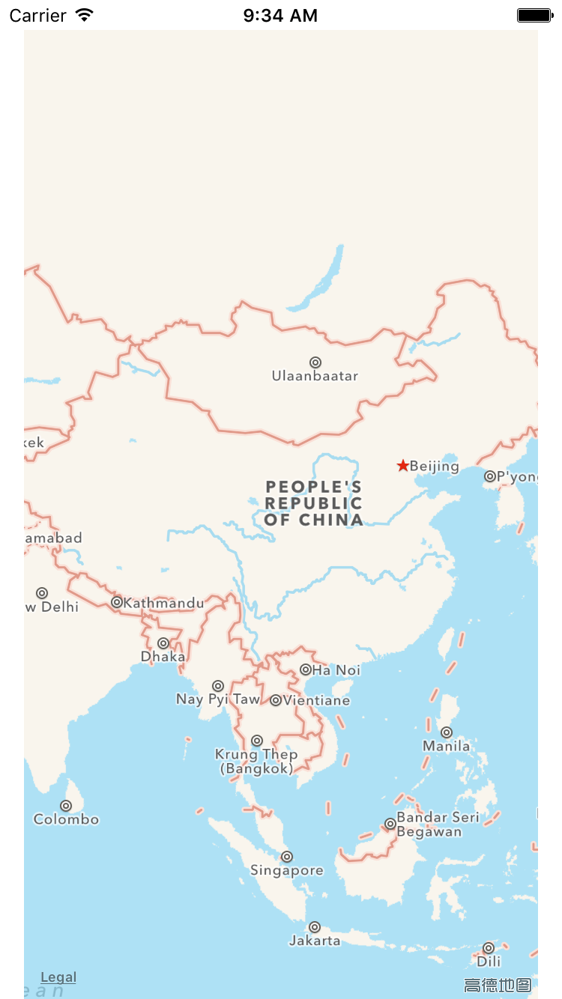
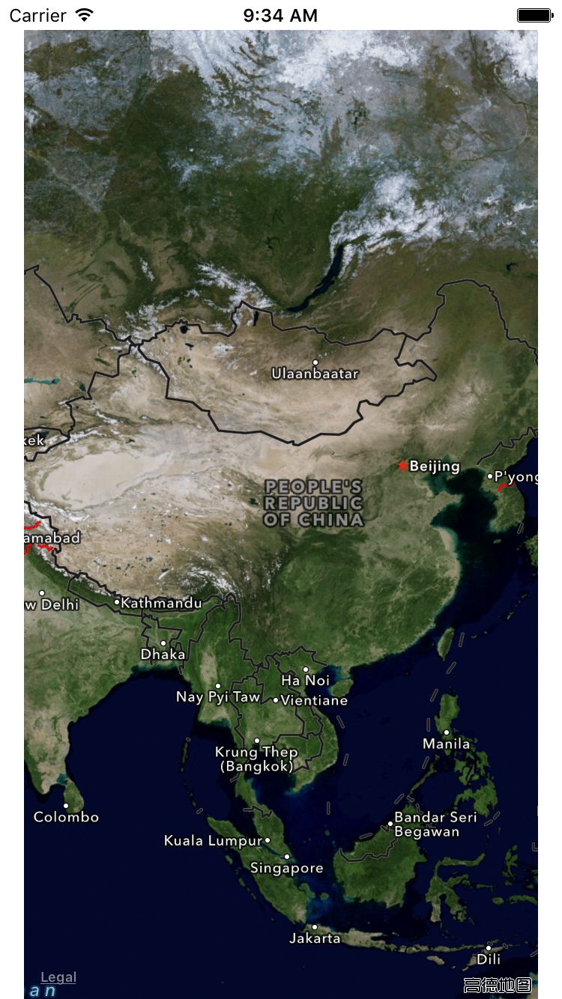

地图的基本使用-MKMapView(地图显示)
- MapKit有一个比较重要的UI控件 ：MKMapView，专门用于地图显示
- 设置MKMapView对应的属性时，注意该属性是从哪个系统版本开始引入的，做好不同系统版本的适配
1. 设置地图显示类型
地图的样式可以手动设置, 在iOS9.0之前有3种, iOS9.0之后增加了2种
设置方式
self.mapView.mapType = MKMapTypeStandard;
| 枚举类型 | 对应含义 |
|---|---|
| MKMapTypeStandard | 标准地图 |
| MKMapTypeSatellite | 卫星地图 |
| MKMapTypeHybrid | 混合模式(标准+卫星) |
| MKMapTypeSatelliteFlyover | 3D立体卫星(iOS9.0) |
| MKMapTypeHybridFlyover | 3D立体混合(iOS9.0) |
- 实例图片在本文末尾
2. 设置地图控制项
地图的旋转, 缩放, 移动等等操作行为都可以开启或者关闭
设置方式
self.customMapView.zoomEnabled = YES; // 是否缩放
self.customMapView.scrollEnabled = YES; // 是否滚动
self.customMapView.rotateEnabled = YES; // 是否旋转
self.customMapView.pitchEnabled = NO; // 是否显示3DVIEW
3. 设置地图显示项
地图上的指南针, 比例尺, 建筑物, POI点都可以控制是否显示
设置方式
// 是否显示指南针（iOS9.0）
self.customMapView.showsCompass = YES;
// 是否显示比例尺（iOS9.0）
self.customMapView.showsScale = YES;
// 是否显示交通（iOS9.0）
self.customMapView.showsTraffic = YES;
// 是否显示建筑物
self.customMapView.showsBuildings = YES;
// 显示兴趣点
self.customMapView.showsPointsOfInterest = true
4. 显示用户位置
效果：
- 可以设置显示用户当前所在位置,以一个蓝点（大头针）的形式呈现在地图上
- 地图不会缩放,而且当用户位置移动时,地图不会跟随用户位置移动而移动

设置方式
self.customMapView.showsUserLocation = YES;注意事项: 如果要显示用户位置, 在iOS8.0之后, 需要主动请求用户授权
5. 追踪用户位置 - 不够灵活
效果：
- 会在地图上显示一个蓝点, 标识用户所在位置;
- 地图显示时会追踪显示用户位置，但不会持续追踪
- iOS8.0-，地图不会自动滚动到用户所在位置
- iOS8.0+，地图会自动放大到合适比例，并显示出用户位置，有时会失效
设置方式
self.customMapView.userTrackingMode = MKUserTrackingModeFollowWithHeading;注意事项: 如果要显示用户位置, 在iOS8.0之后, 需要主动请求用户授权
3 userTrackingMode属性
| userTrackingMode属性 | 含义 |
|---|---|
| MKUserTrackingModeNone | 不跟踪用户的位置 |
| MKUserTrackingModeFollow | 跟踪并在地图上显示用户的当前位置 |
| MKUserTrackingModeFollowWithHeading | 跟踪并在地图上显示用户的当前位置，地图会跟随用户的前进方向进行旋转 |
6.MKMapView的代理
MKMapView可以设置一个代理对象，用来监听地图的相关行为
常见的代理方法有：
// 位置变化时调用，每个位置变化时只调用一次 // 每次调用，都会把用户的最新位置（userLocation参数）传进来 // MKUserLocation: 系统大头针数据模型，内含用户位置 - (void)mapView:(MKMapView *)mapView didUpdateUserLocation:(MKUserLocation *)userLocation; // 地图的显示区域即将发生改变的时候调用 - (void)mapView:(MKMapView *)mapView regionWillChangeAnimated:(BOOL)animated; // 地图的显示区域已经发生改变的时候调用 - (void)mapView:(MKMapView *)mapView regionDidChangeAnimated:(BOOL)animated;
6. 测试环境
- 加载地图数据需要联网
- XCode版本根据测试选择不同版本
- iOS9.0 只能使用 XCode7.0版本
- iOS系统版本根据测试选择不同版本
- 例如地图类型, 在iOS9.0之后才有新增
7. 常见问题总结
1. 地图加载不显示?
检查网络是否通畅
2. 地图放的太大都是格子, 禁止浏览
正常, 为了国家安全等原因, 不会看的太详细
3. 地图运行起来APP占用内存非常大
正常, 地图加载了很多资源
4. 用户位置不显示
首先, 检查代码, 是否有设置显示用户位置,是否有进行请求位置授权
其次, 查看模拟器是否有位置信息
第三, 重置模拟器, 模拟器又发神经了.
8.地图类型实例图片
标准地图：

卫星地图：

混合模式(标准+卫星)：

3D立体卫星：

3D立体混合：